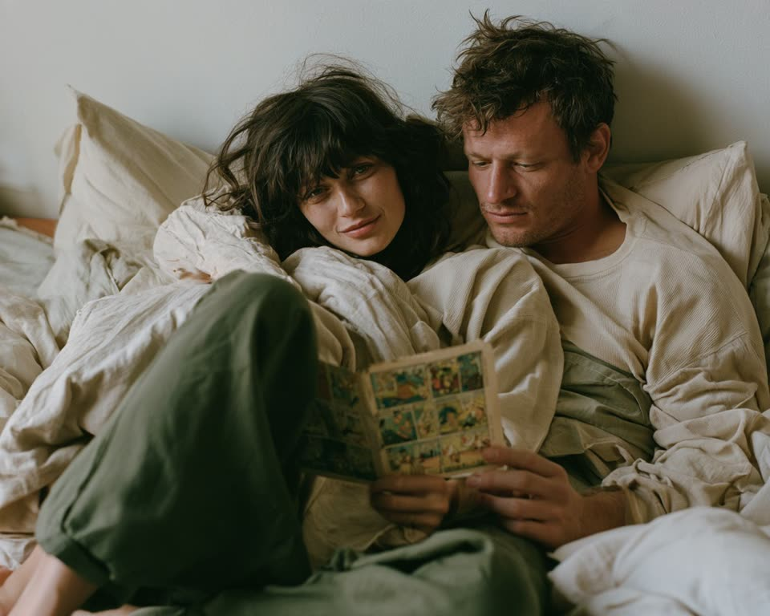

Midjourney v8.2 candid domestic photo: an adult couple (31 and 34) reading a worn comic booklet in a rumpled bed on a grey Saturday morning

A realism recipe that removes the glamour on purpose: "attractive ordinary adults rather than fashion models", "unretouched appearance", "small imperfections", "relaxed coherent hands", and "no glamour styling". Wardrobe and props are chosen to keep it wholesome and readable (oversized long-sleeved cotton pyjama tops, loose trousers, one loose duvet). The comic is described as "simple original comic imagery without recognisable characters or readable words" so no IP or text appears. Soft grey window light and an intimate medium two-shot finish it. A strong lifestyle-ad base for bedding, coffee or Sunday-morning products.
Prompt
An attractive ordinary adult couple aged 31 and 34 cuddling upright against pillows in a rumpled bed under one loose duvet, holding a small worn vintage comic booklet together, woman with messy wavy hair and an amused knowing glance toward the camera while the man looks down at the colourful picture panels, both wearing oversized opaque long-sleeved cotton pyjama tops and loose full-length trousers, faded paper edges and simple original comic imagery without recognisable characters or readable words, soft grey Saturday morning window light, intimate natural medium two-shot, relaxed coherent hands. Candid domestic photography, attractive ordinary adults rather than fashion models, natural skin texture, small imperfections, relaxed believable anatomy, unretouched appearance, soft window light, no glamour styling, no lettering or watermark --v 8.2 --ar 5:4
Our Seedance 2.5 adaptation
[ADAPTED for Seedance 2.5 by Grok Bot; not the creator's prompt. Follows the official BytePlus Seedance 2.5 prompt guide and its official sd25-pe prompt-optimizer skill: parameters only on the API line (not in the prompt body), subject + action + scene, then visuals, camera (move, subject, start, direction, arrival) and sound; only the source's own exclusions are kept.] API: duration 8, ratio 5:4, resolution 1080p, generate_audio true. 【Subject】An ordinary adult couple aged 31 and 34 sitting upright against pillows in a rumpled bed under one loose duvet, both in oversized long-sleeved cotton pyjama tops and loose full-length trousers; the woman has messy wavy hair. 【Action】They hold a small worn vintage comic booklet together; the man turns a page and studies the colourful panels while the woman glances up at the camera with an amused, knowing look and a small smile. 【Camera】Intimate medium two-shot, almost static, with a very slow push-in. 【Visuals】Soft grey Saturday-morning window light, natural skin texture, small imperfections, unretouched appearance, relaxed coherent hands; simple original comic imagery without recognisable characters or readable words. No glamour styling, no lettering or watermark. 【Sound】Paper rustle, a soft exhale of a laugh, quiet room tone and light rain on the window.
Tags: candid domestic, ordinary adults, unretouched, rumpled bed, grey morning window light, medium two-shot, comic booklet, no IP imagery, pyjamas, --v 8.2 --ar 5:4